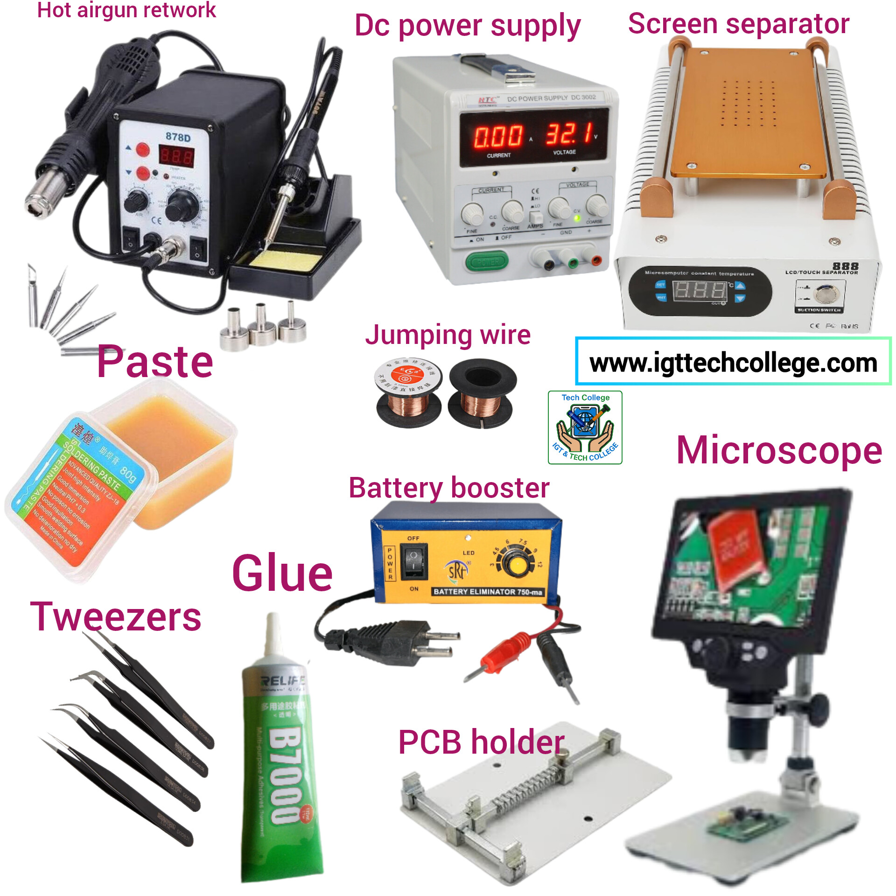

Starting to learn how to repair phone
There are important things you should pay attention to...
There are important things you should pay attention to in order to learn how to repair a phone and there are steps to follow so that you do not get discouraged before completing all the necessary courses. First, convince yourself that it is necessary to learn all, think about their beauty and imagine when you will become an expert and people will tell each other that what you failed at will not be able to do anywhere else
You are asked to avoid skipping classes, if a student skips school classes, he will never succeed well and will end up dropping out of school, the same is the case when you learn how to repair a phone, avoid skipping a certain course before you reach it because you love it, you must follow the following steps and do not want to learn everything in one day, another thing is that you should first learn how to repair small phones(keypads mobile) that have become boring before learning how repair big ones, which are smartphones.
First, you should read this entire introduction, learn all the necessary tools, then learn all the parts of the phone, learn how they work, learn how to remove and replace them, and learn what each part does when it breaks, for example, speakers, mics, charging systems, glass, buttons, battery terminals, ICs, sim card slots, ear phone plugs and many more... once you know all of this, then you can go to the next step and learn the following.
Now start learning and understanding smartphones, learn what makes up smartphones or big phones and learn how they work, learn how to remove and replace them, and know what each component is and what causes it to die, for example, speakers, mics, charging systems, glass, buttons, battery terminals, all types of ICs, sim card slots, phone plugs and many more.. as we will teach you, once you know how to fix a dead smartphone, you will go to the next step.
Now it's time to learn software, you must first know what the phone is and what makes it work without being seen by the human eyes, where you will connect it to a computer know drivers and connection know firmware, scatter file, IMEI and Serial number what it does and what it does and how to change it, flashing, removing password , removing FRP and knowing its operation, formatting and many more we will teach you if you stay with us. and it will also require you to start with small phones and then learn them and then smartphones.
Two types of Mobile techniciansYou are required to choose between the two, namely Hardware and Software, you can choose one or both but avoid mixing them , first learn one and learn other and then you will learn everything and join the job and it would be good for you to knoe both, I wish you well.
Software technicians
They are the ones who repair phones that do not require anything to remove spares, from settings to complex ones that require a computer and many secrets of some that are not allowed in some countries, they are not required to open the phone and you can even operate a phone in another country.
Hardware technicians
They are the ones who fix dead phones, such as removing the battery,speakers,mac,charging system or more and replacing any part, and those who need to open the phone and access its hardware are the ones who are handy.

Tools needed for phone repair
There are some very important tools and some not...
There are some very important tools and some not so important for a beginner, many people tend to get discouraged here and this is due to the mistakes of their instructors who tell them that they should first buy all the tools that they don't know how to use. We understand that you should follow the knowledge you have in buying tools and as your knowledge increases, you should add more tools.
So I will tell you according to your knowledge so that you can understand it well because you may not be able to have all the necessary
Beginner's tools
The first is Soldering iron, Soldering wire, screw driver kit, Candle, multimeter, brush, Phones to learn and having electricity where you learn or sufficient solar power,

Next tools
The first is Hot airgun retwotrk station, tweezers, jumping wire, PCB holder, battery booster, DC power supply, Microscopes, LCD screen separator, paste, not only that, there are other small small things you will need you need as your knowledge increases, the following picture shows you all these tools.
For a beginner, the tools are much cheaper than I can tell you and you will see it and when we get to this lesson, immediately buy the basics I told you about from the beginner
The parts of a small phone and their functions
It is important that you understand the pa...
It is important that you understand the parts of a phone and their functions because that is what will require you to know the problem your phone has and how to solve it All phones have parts, even if they may not be the same type, but do not forget that smartphones have more parts (spares) than traditional phones. First, know the parts of a small phone well because when it comes to learning about smartphones, the beginner does not start there, when the time comes, we will teach you about them. The following photos show you the names and important parts of a small phone.

Phone housing
Housing is the plastic part of the phone, I think you can call it whatever you want, so they are not all the same depending on the type of phone it is going to be installed in.
Motherboard / phone base
Every phone in the world has a motherboard because it is where all the other parts of the phone are mounted. Phones do not have the same motherboard unless they are of the same type. The motherboard consists of two main paths, which are positive+ and negative- and if you count the paths that are hidden inside the motherboard, all the others are GND (Ground) which is negative -.
Buttons/ keypads /KEYPADS
Keypads are some that are visible on the back and we press them but there are some that are inside that know the keys we press. Those keys that you see look like molten gold because they are inside and are removed when we press the keys that are visible on the back. Those keys inside are made up of positive + and negative - Those keys that you see on the inside of the wheels are small wheels that are + and the negative ones work on the second wheels and on the ground. This positive contact is connected to the negative or ground when the contact is immediately used by the CPU and software programs, that's where we see the usefulness of the keypads contact layer, let's talk about it here👇
Keypads contact layer
The keypads contact layer or the layer that covers the contacts is a small thing that seems useless but has a powerful function. As we mentioned above, for the button or key to work, you first connect its positive and negative, these little things that make you look at the keypads contact layer are the ones that connect the two sides and the contact works. When a person presses the phone's keys, each contact is visible on the back, each contact is equal to the contact and is also equal to the front contacts, this is done in three ways so that the contact writes what you want, (pressing the back contacts, and then pressing the contact layer which also connects the positive and negative). You will learn a lot in this lesson.
Charging IC and resistor
The charging IC is what controls the power the phone receives and transfers it to the battery, along with the resistor, which you will also learn a lot about in the lessons on ICs and their functions. When the IC is dead, even if you put a new charging port in it, the phone will show you that it is charging but the power is not coming in or it says charging error and it can even cause the phone to overheat so much that you cannot put it in a pocket with clothes on and to stop the power from going out etc..

Speaker and its function in the phone
The speaker or microphone is responsible for emitting sounds that are heard outside when we are playing the phone, whether it is an SD card or an FM radio and when we listen to the voice of the person we are talking to when we call each other on the phone, but the speaker is different from the mic and we also hear it. When we are talking to the person we are talking to, we hear the voice of the person we are talking to through the speaker but on the tecno 528 it has another mic for this purpose. The speaker consists of two wires, a red and a black wire, red is +(positive) and black is -(negative).
If the phone is not playing either on the FM Radio or SD card, the microphone is probably dead, one or both wires are broken, but sometimes it can be caused by damaged diodes connecting the speaker to the phone's motherboard.
Microphone and its function
A microphone is also made up of two wires, positive and negative (+ and -). The microphone's job is to record sound. It captures your voice and sends it to the speaker of the person you are talking to so that they can hear it. And in turn, it captures the voice of the person you are talking to and sends it to your speaker so that you can hear it. So if the person you are calling hears his voice but you don't hear yours, then your phone's mic is the one with the problem because it wasn't capturing your voice and sending it to them.And when you record, the sound is not audible, but you only hear a hissing sound. This is because the mic has the following problems: a damaged mic, a broken wire or one, or damage to the connections between the mic and the motherboard.
Display (Screen) glass and its importance
The phone glass is made up of many different types depending on the type of phone, some have 16,17,20,24 legs, while on small phones only have 16. The glass's function is to show what's inside the phone's motherboard because if you remove it, the phone will still work, but you can't see what it's doing, that's why it's called Display in English. It is made up of lights that give off light when it's dark, but it shows what's inside when you turn it on, even if those lights are dead.
As the screen has many legs or paths, each path has its own function, so if it only lights white, it needs to be removed and you can install a new one or check the damaged glass path and connect it, not forgetting that sometimes it can be caused by the CPU ic, which we will talk about if you install another one and it continues to light white, there are damaged paths on the motherboard or the CPU ic has a problem

Red diode / Torch
Torch is a diode called Red that is responsible for giving light, it consists of positive + and negative, the long leg is called the other and is positive + and if you look closely at where it is attached to the motherboard, there is a sign of assembly and in many places on the phone there are no signs of assembly and removal We will help you understand how to install new wires because if you do it wrong, it will not work. If the phone light does not light up, then it is either broken or the small diode on the black bottom is dead. They are made up of different parts depending on the type of phone because some have wires like this speaker but they are all the same because the red one is positive and the black one is negative.
Camera
The purpose of the Camera is to take pictures. If the phone does not show the pictures you have taken clearly, it only shows you darkness and if you have taken a picture of a person or something, you should replace the Camera with a new one or take it from another phone, the same thing happens.
Simcard slots or where we insert the simcard
There is no phone without simcard slots but they are not all made the same, some have one, two, three or four. So the simcard will accept to work in another phone but if you put it in yours or in this customer's phone it refuses to work and shows that it has burned the phone instead it says insert simcard (meaning insert simcard) then the simcard slot is damaged or its paths to the cpu are broken. So the solution is to remove the simcard slot and put another one in but be careful because it is different from the simcard that you can think of as going in but the network is lost. (We will also talk about that)
SDCard slot
The Sdcard slot also has different types depending on the phone it is. So this is the one we put memory or Sdcard in, if you put a good memory in it it refuses to work because the sdcard slot is dead or the paths connecting it to the cpu (the heart of the phone) are damaged So the solution is to replace it with a good one. There are 16 channels on both sides, so even if just one is broken or bent, the memory won't work if you replace it and put another one in.
Charging port /charging jack
A charging port is a small port that we plug in a USB cable when we are charging our phone, not only because it also connects the phone to a computer. Charging ports for small phones come in different types, called by the type of phone, but there are 5 ways in total, and you will learn them when the time comes. If the phone is not charging then the charging port is damaged so replace it with another one, although there are some reasons that it could be caused by the charging ic but the other is the charging port that has caused me with its ways
Battery terminals /battery terminals
The battery terminals of mobile phones consist of three teeth where we plug the battery but you can also find them with four but they all have the same function of taking the power from the battery and sending it to each part of the phone, but the terminals that connect them are capacitors, diodes, ICs ... The three ways that make up the battery terminals have positive, negative and vibration So if the middle one is broken, the phone will work but the side ones are broken, it requires replacing the battery terminals. But this middle path is important because it helps to heat the right amount of heat without excess, so if this path does not work, there will be problems with high temperature or low temperature (too much heat or too little).
Earphone plug-in
The earphone plugin is where we plug in the earphones or headphones to listen to the music. If it does not work, it may be due to dead earphones or damaged earphone plugins. The solution to the problem is to remove the other one and it also has a positive and negative.
Network points
This name network points is common because it is two points, one called GSM and the other called GND, which means ground. The purpose of network points is to provide a network connection to the telephone antenna. If you look closely, the metal part on the telephone housing is also connected because this metal is the telephone antenna. When network points are removed from GND, you can connect them anywhere on the ground, but if it is GSM, you need to connect them according to their methods (stay with us and you will learn about them).
Crystals oscillator / real time oclock
This is how the time is set in the phone and if you remove it, the phone will die unless you know how to charge it properly. This crystal oscillator is made up of two types, namely RF (Reference Frequency) which sets the signal for use with the network and others, and RTC (Real time oclock) which is responsible for the time on the phone (hours, date and year). You can also remove the phone if it lacks a signal to charge it and the system it runs on suddenly stops.
CPU IC and Power IC
I will mention this briefly because there is a lesson prepared for ICs only when we get to the lessons on smart phones. The CPU is the heart of the phone While the power IC is what provides the power needed for each part of the phone, without it the phone would not work and without a heart it would not work either. The heart is as important as the human heart, so is the CPU in the phone (you will understand).
Mobile Repairing Overview
Understand how to fix phones...
Mobile repairing focuses on diagnosing and fixing phone issues including hardware and software. You will learn to replace screens, fix charging problems, restore battery life, and solve software glitches. This hands-on course prepares you to become a professional mobile technician.